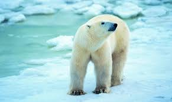
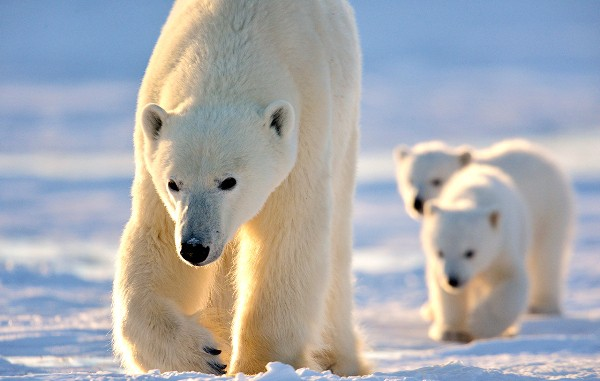

Khi đến Bắc Cực, bạn có thể bắt gặp những chú gấu trắng đi lang thang trên những tảng băng dày và bơi lội trong những vùng nước ven biển nơi đây. Đôi bàn chân trước của chúng khá lớn và có màng, đặc điểm cơ thể này giúp gấu trở thành một trong những “vận động viên bơi lội” cừ khôi bậc nhất ở xứ sở băng giá. Thậm chí, chúng có thể bơi ra những vùng nước cách xa đất liền hàng trăm cây số.
Khu vực lạnh như Bắc cực.
Bắc Cực là một trong những nơi lạnh nhất trên hành tinh vì vậy, để thích nghi được với thời tiết khắc nghiệt nơi đây, gấu trắng Bắc Cực phải phụ thuộc vào lớp lông dày bao phủ quanh cơ thể chúng cùng một lớp mỡ béo bên dưới. Ngoài ra, lông còn mọc ở đáy bàn chân loài này khiến chúng không còn cảm thấy lạnh khi tiếp xúc với băng và di chuyển dễ hơn, không bị trơn trượt. Lớp lông màu trắng của gấu còn là “chiếc áo” giúp chúng ngụy trang trong băng tuyết. Có một sự thật thú vị đó là, dưới lớp lông trắng muốt kia, gấu Bắc Cực lại có lớp da màu đen giúp chúng không bị cháy nắng bởi ánh mặt trời
Giống gấu Bắc Cực cái cái thường đào những cái hang thật sâu trong tuyết để ẩn nấp vào những ngày quá lạnh và tránh mưa tuyết. Gấu mẹ đẻ con vào mùa đông (thường là sinh đôi). Những con non ở với mẹ của chúng trong khoảng 28 tháng để học các kỹ năng sinh tồn. Trái với gấu đực không làm gì giúp đỡ bạn đời của mình thì gấu cái vừa chăm sóc, lại vừa bảo vệ con. Trong thực tế, giống đực thậm chí còn giết chết chính con của mình. Tuy có vẻ ngoài đáng yêu nhưng loài động vật này lại là những kẻ săn mồi mạnh mẽ và thường không sợ con người. Điều này chính là một mối nguy to lớn đối với người dân nơi đây. Gấu trắng Bắc Cực bị thu hút bởi mùi rác mà con người xả ra nơi họ sống và có thể vì vậy mà đến gần khu dân cư.